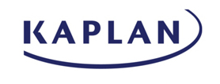
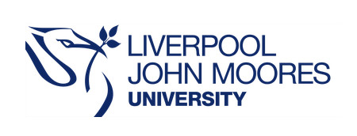
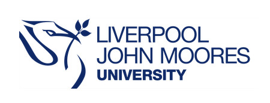
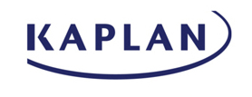
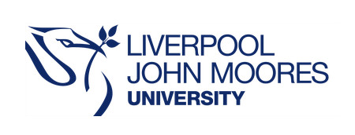

Partners
 

Sponsors
Are you done with traditional conferencing? Will you scream if you see another powerpoint presentation?
Perhaps it's time to try something new. TEL Fest is an alternative conference for Teachers and
Educational Technologists in Higher Education.
Join us for a single fun packed day of events that YOU get to choose before the event!
Take part in one of our immersive workshops, feel the heat of our fast paced
lightning talks or network during our Discovery sessions.
TEL Fest 2019 celebrates the rapid changes and diversity in technology for education
by bringing together a truly inclusive event hosted in partnership between Liverpool International College, University of Liverpool
and Liverpool John Moores University. We crave for a more diverse landscape in the field of Technology Enhanced Learning (TEL),
one in which people of different backgrounds can showcase their awesomeness.
Partners

Sponsors